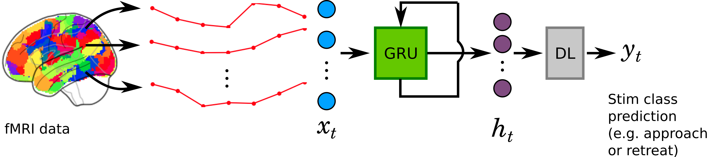

2. Methods¶
2.1. Procedure & Visual Stimuli¶
fMRI data was collected from 61 participants.
Forty-five minutes of fMRI data was collected on every participant.
Two circles moved around randomly on the projection screen.
When circles collided, a mild but unpleasant electric shock was delivered to the index and middle fingers of participant’s left hand.
Shock delivery was only meant to induce fear of circle collision.
Several events of “near-miss” occured at random times during the experiment.
Near-miss events are defined as those when the circles approach each other for at least 8 seconds, come very close (i.e., distance less than 1.5 times the circle diameter), but miss and start to retreat, again, at least for 8 seconds.
Near-miss events were included to investigate brain’s dynamic response to approaching and retreating threats.
2.2. Preprocessing¶
fMRI timeseries data suffers from a lot of noise such as,
Physiological signals associated with respiratory and cardiac cycles.
Head motion.
Scanner noise (drifts).
These noise were filtered out using ICA (https://fsl.fmrib.ox.ac.uk/fsl/fslwiki/).
2.3. Training Data¶
Out of the 45 minute long timeseries data, “segments” corresponding to near-miss events were extracted.
Each segment was 14 timepoints long (14 x 1.25 = 17.5 seconds): first 7 timepoints corresponded to approach, and later 7 to retreat.
Every participant had 46 segments. That is, approximately 13 out 45 minutes of data was used for training a predictive model.
Following is an example of a segment from the parietal cortex of the brain.
<nilearn.plotting.displays.OrthoProjector at 0x7f1fbf8e7390>
Training segments from a total of 316 brain regions were extracted in a similar fashion.
Following figure shows all the 316 brain regions of interest (ROI).
<nilearn.plotting.displays.OrthoProjector at 0x7f1fbdfd5780>
Every segment was divided into two training examples and labeled accordingly as follows:
<----------- Timeseries ---------------> Label training example 1: [TP00, TP01, TP02, TP03, TP04, TP05, TP06] -> "approach" training example 2: [TP07, TP08, TP09, TP10, TP11, TP12, TP13] -> "retreat"
Out of 61 participants, only 42 participants’ data was used to train and validate the model. Remaining 19 participants data was used to test the model.
2.4. Model¶
{kind=link}
A variant of Long-Short Term Memory (LSTM), Gated Recurrent Units (GRU) architecture was emplyed to characterize the spatio-temporal pattern in the fMRI data.
The GRU architecture had three hidden layers, each with 16 GRU units, and an ouput time-distributed, dense layer (DL) with single unit. The time-distributed DL returned prediction at every timepoint. Following was the model architecture:
Model: "sequential"
_________________________________________________________________
Layer (type) Output Shape Param #
=================================================================
gru (GRU) (None, None, 16) 16032
_________________________________________________________________
gru_1 (GRU) (None, None, 16) 1632
_________________________________________________________________
gru_2 (GRU) (None, None, 16) 1632
_________________________________________________________________
time_distributed (TimeDistri (None, None, 1) 17
=================================================================
Total params: 19,313
Trainable params: 19,313
Non-trainable params: 0
_________________________________________________________________